Analyse des résultats d'iTrameur
| 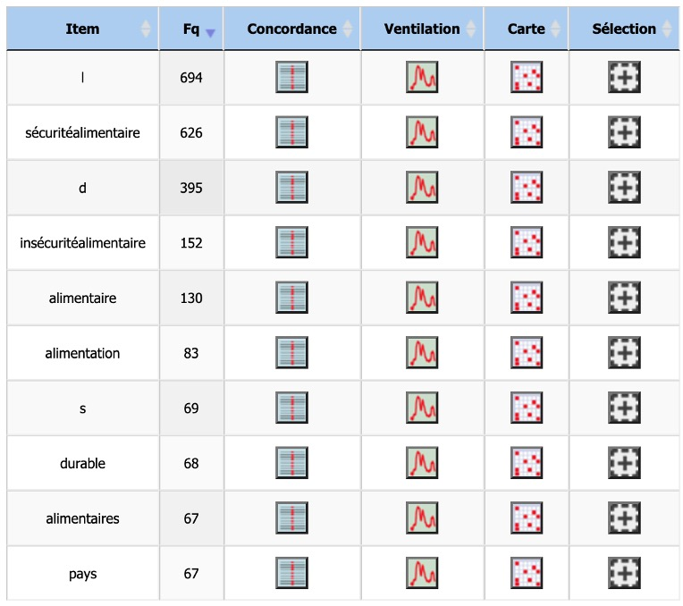 | 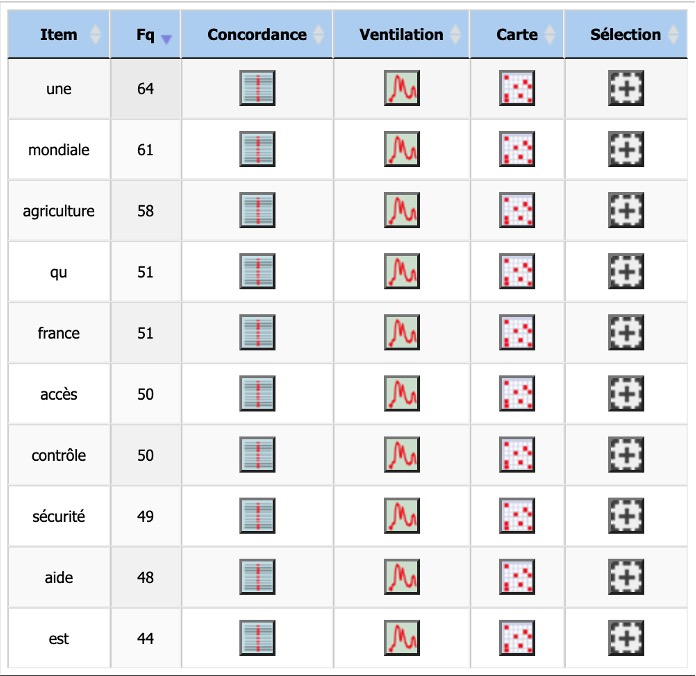 |
Dictionnaire de fréquence :
Parmi les termes les plus fréquents du dictionnaire, les dix premiers résultats ne sont peut-être pas très significatifs. À part quelques stopwords que nous avons du mal à enlever, comme "l', d' et s'", les formes les plus fréquentes sont la forme cible "sécurité alimentaire" et ses dérivés, comme "insécurité alimentaire", "alimentaires" ou "alimentation". Raison pour laquelle nous avons décidé de rajouter 10 résultats de plus pour mieux comprendre l'enjeu du terme cible.
Parmi les résultats qui ne font pas partie des stopwords ou des mots dérivés de "sécurité alimentaire", nous trouvons tout d'abord des termes qui relèvent des relations internationales tels que "pays", "mondiale" ou "france". Cela s'explique facilement comme la sécurité alimentaire, définie par la Banque mondiale dans 4 dimensions telles que "la disponibilité, l'accès, l'utilisation et la stabilité des aliments", est bel et bien un enjeu international qui sollicite la solidarité et l'entraide des pays à travers le monde.
Nous remarquons ensuite des mots qui relèvent plus précisément du domaine de l'alimentation, comme "agriculture", "durable", "accès", "contrôle" et "aide". Certains d'entre eux sont déjà mentionnés comme l'accès et la durabilité (synonyme de la stabilité). Le terme "contrôle" pourrait faire référence à la régulation de la qualité des aliments. "Aide" souligne l'importance de l'assistance internationale et des programmes de soutien destinés aux communautés en difficulté.
| 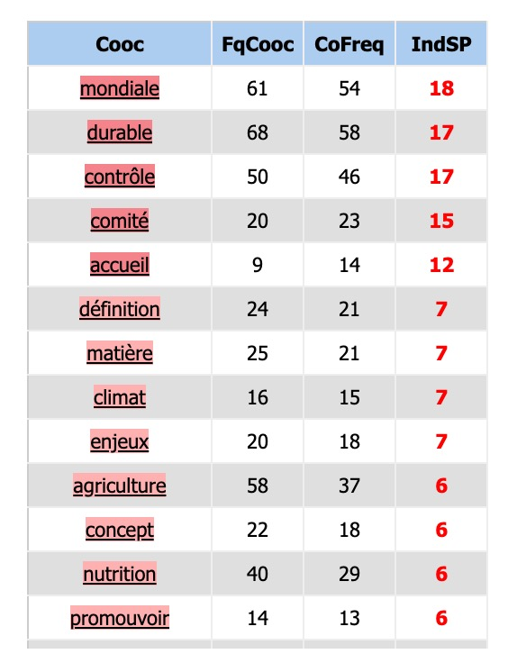 | 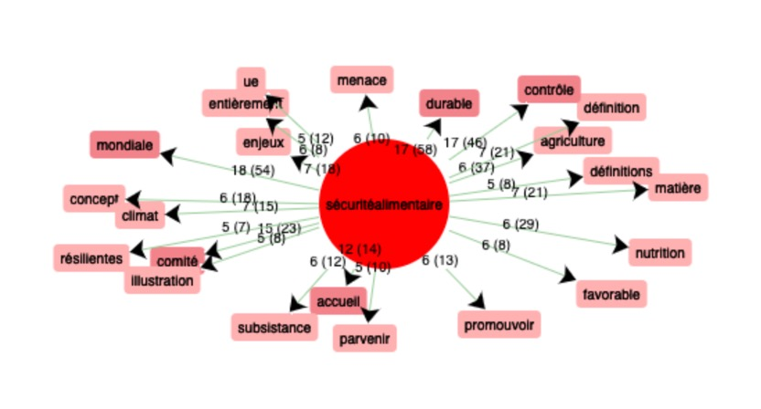 |
Cooccurrences :
Nous trouvons, dans le tableau de cooccurrences et la graphe, des termes qui sont déjà présents dans le dictionnaire de fréquence, tels que "mondiale", "durable", "contrôle" et "agriculture". En dehors de ces résultats, nous trouvons des termes intéressants tels que "climat", "matière" et "nutrition" qui montrent clairement que la sécurité alimentaire est aussi un enjeu écologique, comme "matière" pourrait pointer vers les ressources fondamentales nécessaires à la production alimentaire; et "nutrition" et "climat" établissent un lien entre la sécurité alimentaire l'environnement.
Par ailleurs, nous trouvons des mots plutôt géopolitiques, comme "comité", "accueil", "enjeux", "promouvoir" et même "menace". "Comité", "accueil", "enjeux" et "promouvoir" soulignent l'importance politique de la sécurité alimentaire, la manière dont les politiques sont façonnées, discutées et mises en œuvre au niveau international. Et quant au terme "menace", il souligne les risques potentiels qui pèsent sur la sécurité alimentaire, qu'ils soient liés aux conflits, aux crises économiques, aux pandémies, aux changements climatiques ou à d'autres raisons perturbatrices.
En somme, le tableau de cooccurrences illustre bien que la sécurité alimentaire est à l'intersection de multiples domaines : écologique, économique, social et géopolitique. Elle nécessite de prendre en compte non seulement la production et la distribution alimentaire, mais aussi les politiques durables, la gestion des risques, la coopération internationale et l'engagement à long terme pour assurer la stabilité et la durabilité des systèmes alimentaires face aux défis actuels et futurs.
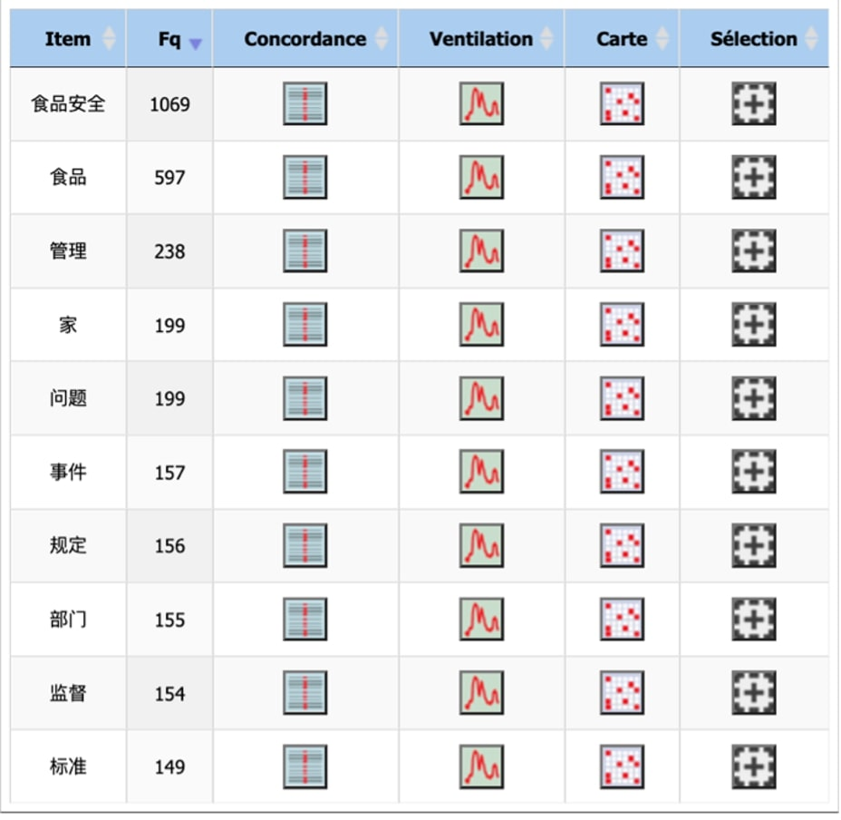Dictionnaire par fréquence :
En observant le dictionnaire des formes, nous trouvons les items du corpus des plus fréquents aux moins fréquents. Dans notre corpus chinois, le mot qui apparaît le plus fréquemment est notre mot cible : « 食品安全 sécurité alimentaire ». Comme notre mot cible combine « la sécurité » et « l’alimentation », le terme « 食品 alimentation » a une fréquence assez considérable.
Après notre mot cible, nous voyons les mots « 管理gestion », « 监督surveillance », « 规定article/règle », « 标准standard ». Cela pourrait s'expliquer par le fait que, les sites chinois liés à la sécurité alimentaire font souvent référence aux méthodes de gestion de la sécurité alimentaire, aux dispositions légales ou aux règlements garantissant la sécurité alimentaire.
Nous remarquons ensuite les termes « 问题problème », « 事件incident ». Parce que des actualités sociales liées à la sécurité alimentaire sont souvent couvertes en ligne, par les médias chinois.
| 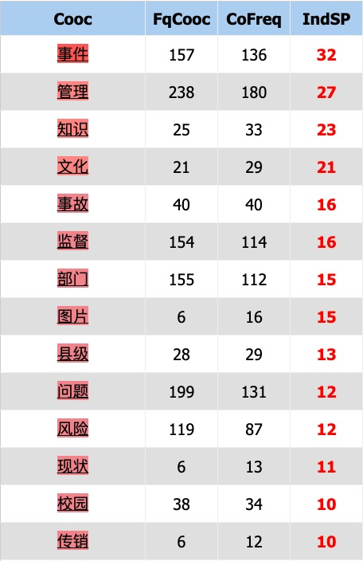 | 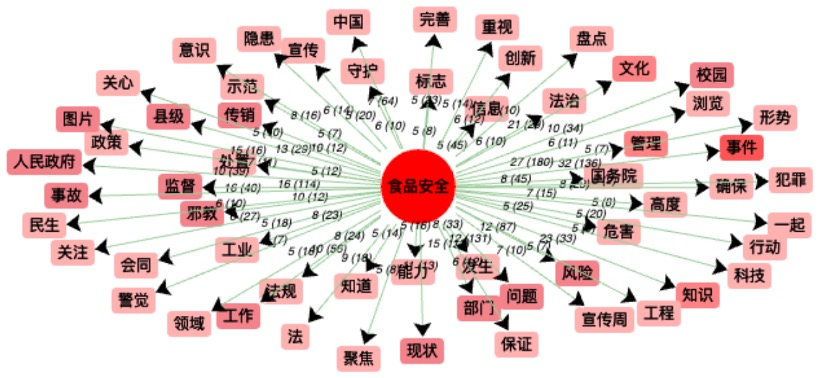 |
Les résultats de la cooccurrence :
Les résultats de la cooccurrence sont visibles sous forme de tableau et de graphique.
Parmi ces résultats, certains mots sont également fréquemment présents dans le dictionnaire précédent, tels que « 管理gestion » et « 事件incident ».
De plus, nous pouvons voir que les termes « 校园campus » et « 工作travail » apparaissent fréquemment avec « sécurité alimentaire ». C’est parce que, dans la vie quotidienne, en dehors de manger à la maison, les endroits fréquents pour prendre des repas sont les cantines sur le lieu de travail ou dans les écoles pour les étudiants.
En outre, certains termes tels que « 关注attention », « 重视importance », « 警觉vigilance », « 聚焦concentration » appellent à accorder davantage d'attention aux sujets concernant la sécurité alimentaire. Les termes « 风险risque », « 危害détriment », « 隐患danger » signalent la nécessité de rester vigilant, mettant en garde contre les dommages potentiels pour la santé dus à la négligence en matière de sécurité alimentaire.
Les termes « 科技technologie », « 创新innovation », « 法规réglementation », « 法loi » indiquent que les autorités chinoises cherchent à garantir la sécurité alimentaire en combinant différentes approches. Il est nécessaire non seulement de perfectionner la législation en matière de réglementation alimentaire, mais aussi de développer des technologies scientifiques pour des contrôles plus efficaces et précis sur divers types d'aliments.
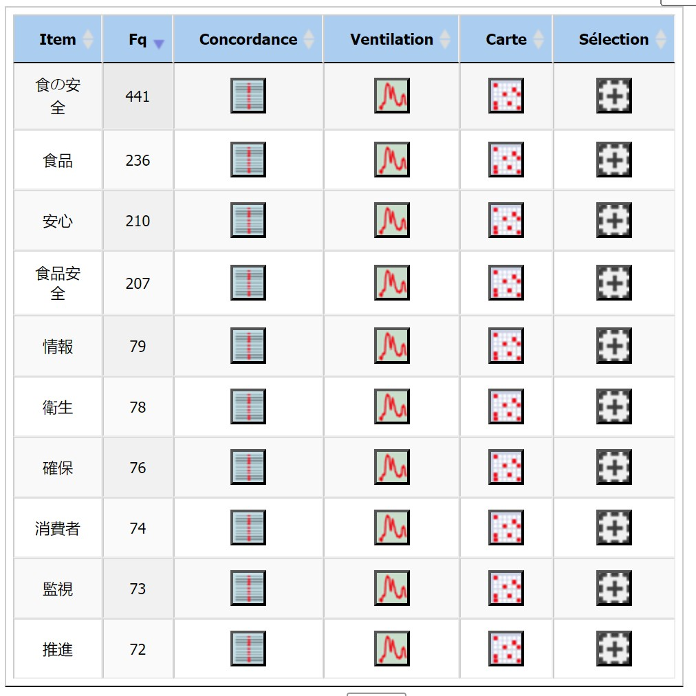Dictionnaire de fréquence :
Les statistiques du site iTrameur montrent que des mots tels que "安心(tranquillité d'esprit)", "衛生(hygiène)" et "消費者(consommateur)" apparaissent plus fréquemment sur les sites web japonais, ce qui reflète la préoccupation des consommateurs pour la sécurité alimentaire. Le consommateur se préoccupe de la sécurité alimentaire, tandis que des mots tels que "情報(information)", "監視(supervision)" et "推進(promotion)" reflètent l'importance que les entreprises et le gouvernement accordent à la sécurité alimentaire.
| 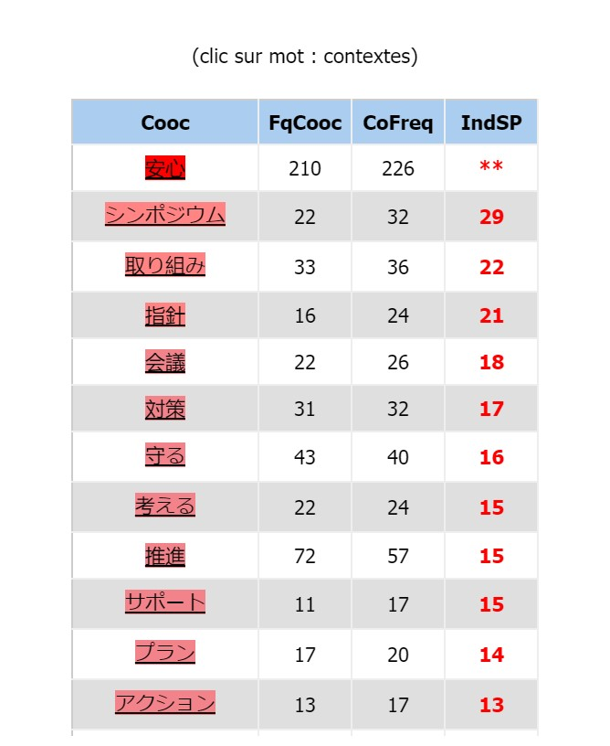 | 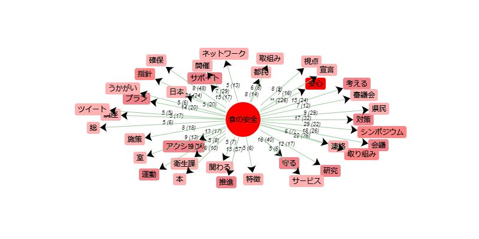 |
| 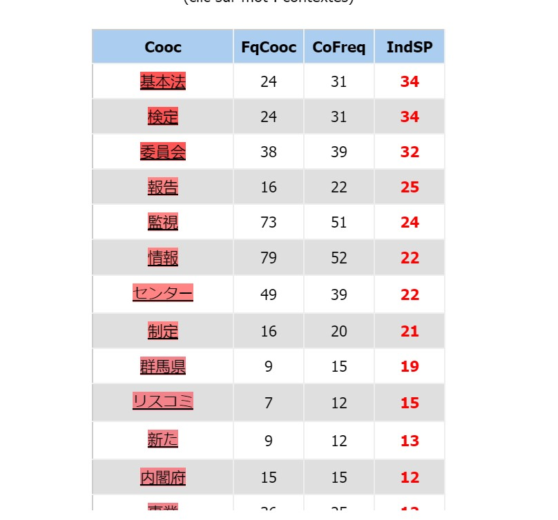 | 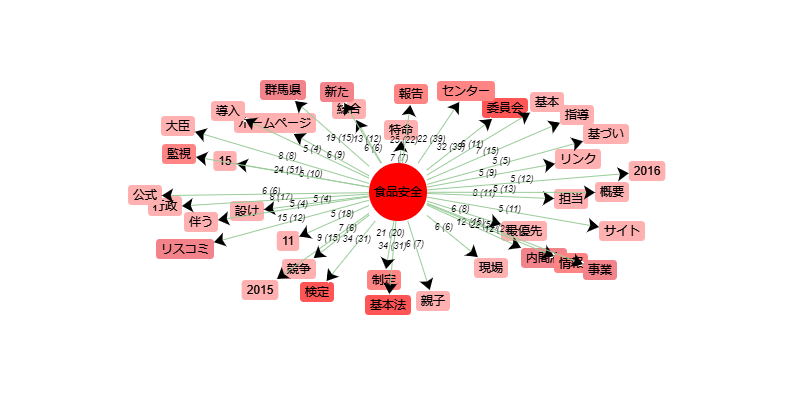 |
Cooccurrences :
La traduction japonaise de "sécurité alimentaire" comporte à la fois le mot plus quotidien "食の安全" et le mot plus écrit "食品安全". On constate que les mots les plus courants sont entourés de mots liés à la vie quotidienne. La terminologie plus écrite se retrouve plus souvent dans les avis et règlements gouvernementaux.